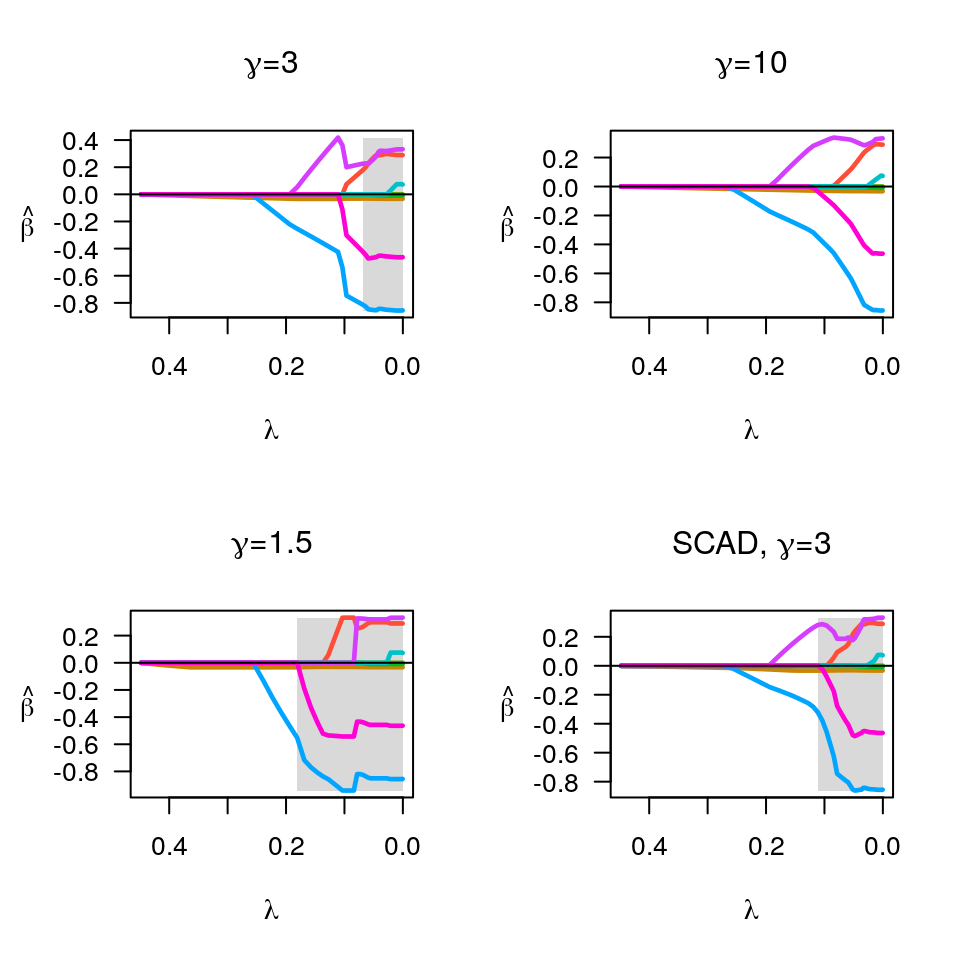
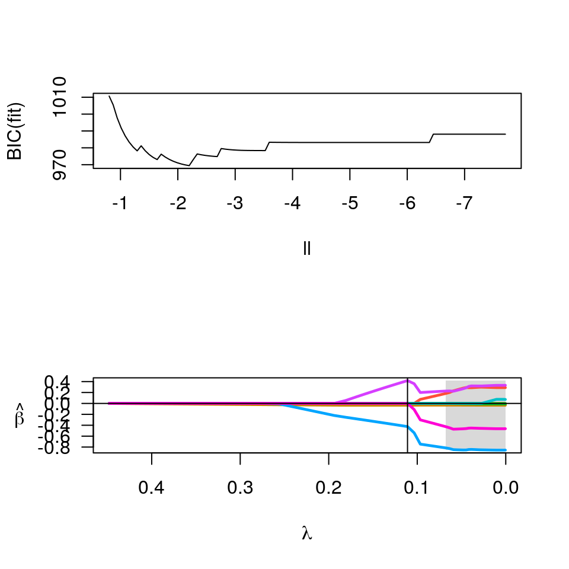
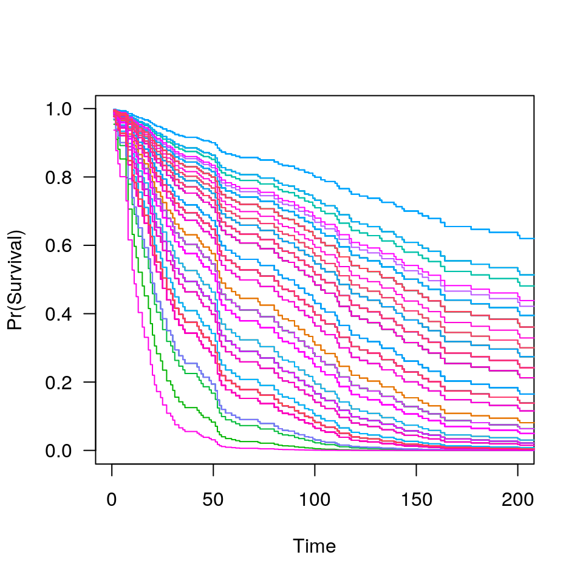

ncvsurv.RdFit coefficients paths for MCP- or SCAD-penalized Cox regression models over a grid of values for the regularization parameter lambda, with option for an additional L2 penalty.
ncvsurv(X, y, penalty=c("MCP", "SCAD", "lasso"), gamma=switch(penalty, SCAD=3.7, 3), alpha=1, lambda.min=ifelse(n>p,.001,.05), nlambda=100, lambda, eps=1e-4, max.iter=10000, convex=TRUE, dfmax=p, penalty.factor=rep(1, ncol(X)), warn=TRUE, returnX, ...)
| X | The design matrix of predictor values. |
|---|---|
| y | The time-to-event outcome, as a two-column matrix or
|
| penalty | The penalty to be applied to the model. Either "MCP" (the default), "SCAD", or "lasso". |
| gamma | The tuning parameter of the MCP/SCAD penalty (see details). Default is 3 for MCP and 3.7 for SCAD. |
| alpha | Tuning parameter for the Mnet estimator which controls
the relative contributions from the MCP/SCAD penalty and the ridge,
or L2 penalty. |
| lambda.min | The smallest value for lambda, as a fraction of lambda.max. Default is .001 if the number of observations is larger than the number of covariates and .05 otherwise. |
| nlambda | The number of lambda values. Default is 100. |
| lambda | A user-specified sequence of lambda values. By default,
a sequence of values of length |
| eps | Convergence threshhold. The algorithm iterates until the
RMSD for the change in linear predictors for any coefficient is less
than |
| max.iter | Maximum number of iterations (total across entire path). Default is 1000. |
| convex | Calculate index for which objective function ceases to be locally convex? Default is TRUE. |
| dfmax | Upper bound for the number of nonzero coefficients. Default is no upper bound. However, for large data sets, computational burden may be heavy for models with a large number of nonzero coefficients. |
| penalty.factor | A multiplicative factor for the penalty applied
to each coefficient. If supplied, |
| warn | Return warning messages for failures to converge and model saturation? Default is TRUE. |
| returnX | Return the standardized design matrix along with the
fit? By default, this option is turned on if X is under 100 MB, but
turned off for larger matrices to preserve memory. Note that
certain methods, such as |
| ... | Not used. |
The sequence of models indexed by the regularization parameter
lambda is fit using a coordinate descent algorithm. In order
to accomplish this, the second derivative (Hessian) of the Cox partial
log-likelihood is diagonalized (see references for details). The
objective function is defined to be
$$Q(\beta|X, y) = \frac{1}{n} L(\beta|X, y) +
P_\lambda(\beta)$$
where the loss function L is the deviance (-2 times the partial
log-likelihood) from the Cox regression mode.
See
here for more details.
Presently, ties are not handled by ncvsurv in a particularly
sophisticated manner. This will be improved upon in a future release
of ncvreg.
An object with S3 class "ncvsurv" containing:
The fitted matrix of coefficients. The number of rows
is equal to the number of coefficients, and the number of columns
is equal to nlambda.
A vector of length nlambda containing the number
of iterations until convergence at each value of lambda.
The sequence of regularization parameter values in the path.
Same as above.
Same as above.
Same as above.
Same as above.
The last index for which the objective function is
locally convex. The smallest value of lambda for which the
objective function is convex is therefore
lambda[convex.min], with corresponding coefficients
beta[,convex.min].
The deviance of the fitted model at each value of
lambda.
Same as above.
The number of observations.
For Cox models, the following objects are also returned (and are
necessary to estimate baseline survival conditonal on the estimated
regression coefficients), all of which are ordered by time on study.
I.e., the ith row of W does not correspond to the ith row of
X):
Matrix of exp(beta) values for each subject over all
lambda values.
Times on study.
Failure event indicator.
Additionally, if returnX=TRUE, the object will also contain
The standardized design matrix.
Breheny P and Huang J. (2011) Coordinate descentalgorithms for nonconvex penalized regression, with applications to biological feature selection. Annals of Applied Statistics, 5: 232-253. myweb.uiowa.edu/pbreheny/pdf/Breheny2011.pdf
Simon N, Friedman JH, Hastie T, and Tibshirani R. (2011) Regularization Paths for Cox's Proportional Hazards Model via Coordinate Descent. Journal of Statistical Software, 39: 1-13. http://www.jstatsoft.org/v39/i05
data(Lung) X <- Lung$X y <- Lung$y op <- par(mfrow=c(2,2)) fit <- ncvsurv(X, y) plot(fit, main=expression(paste(gamma,"=",3))) fit <- ncvsurv(X, y, gamma=10) plot(fit, main=expression(paste(gamma,"=",10))) fit <- ncvsurv(X, y, gamma=1.5) plot(fit, main=expression(paste(gamma,"=",1.5))) fit <- ncvsurv(X, y, penalty="SCAD") plot(fit, main=expression(paste("SCAD, ",gamma,"=",3)))par(op) fit <- ncvsurv(X,y) ll <- log(fit$lambda) op <- par(mfrow=c(2,1)) plot(ll, BIC(fit), type="l", xlim=rev(range(ll))) lam <- fit$lambda[which.min(BIC(fit))] b <- coef(fit, lambda=lam) b[b!=0]#> karno squamous adeno #> -0.03316393 -0.42452397 0.41834812plot(fit)